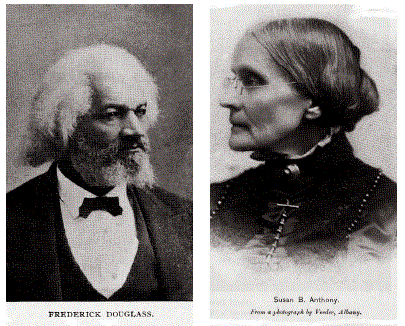
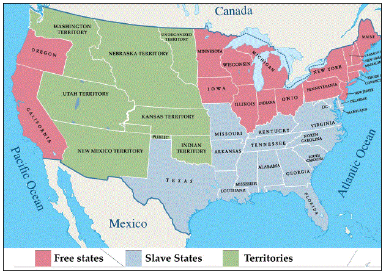
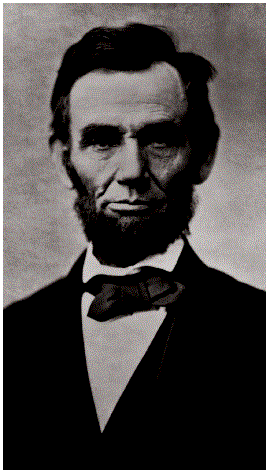

[p58]
In this chapter, you will learn about:
[p58]
En este capítulo, aprenderá sobre:
During the 1800s, the states in the southern United States began to depend more on growing cotton and other crops for sale to countries in Europe. Landowners depended on enslaved people to do the work.
As the U.S. gained more territory, many people who owned slaves in the South wanted to move to the new states and territories in the West. They wanted to find more land to grow crops like cotton, corn, and tobacco. They also wanted slavery to be legal in the West so they could bring enslaved people to work on the farms and grow crops.
Most northern states passed laws against slavery, and many people in the North did not want slavery to be legal in the West. When people from the North and the South began moving west in the 1800s, there were many conflicts about whether slavery should be legal in the new states and territories. Congress began to pass laws that said where slavery was legal in the West and where it was not.
[Photo: Picking cotton on a Georgia plantation. Courtesy of the Library of Congress.]
Durante el siglo XIX, los estados del sur de los Estados Unidos comenzaron a depender más del cultivo de algodón y otros cultivos para su venta a países de Europa. Los propietarios de tierras dependían de las personas esclavizadas para hacer el trabajo.
A medida que los Estados Unidos ganaron más territorio, muchas personas que tenían esclavos en el Sur querían mudarse a los nuevos estados y territorios del Oeste. Querían encontrar más tierras para cultivar productos como algodón, maíz y tabaco. También querían que la esclavitud fuera legal en el Oeste para poder llevar personas esclavizadas a trabajar en las granjas y cultivar.
La mayoría de los estados del norte aprobaron leyes contra la esclavitud, y muchas personas en el Norte no querían que la esclavitud fuera legal en el Oeste. Cuando personas del Norte y del Sur comenzaron a mudarse al Oeste en el siglo XIX, hubo muchos conflictos sobre si la esclavitud debería ser legal en los nuevos estados y territorios. El Congreso comenzó a aprobar leyes que decían dónde era legal la esclavitud en el Oeste y dónde no.
[Foto: Recogiendo algodón en una plantación en Georgia. Cortesía de la Biblioteca del Congreso.]
[p59]
Between 1800 -1860 there were people who thought that slavery should be illegal and that everyone in the U.S. should have civil rights. For example, Frederick Douglass escaped from slavery and became an important civil rights leader in the 1800s. He is famous for giving speeches and writing books about ending slavery and protecting civil rights for all people.
Susan B. Anthony is another person who fought for civil rights during the 1800s. She agreed with Frederick Douglass that slavery should be illegal. Susan B. Anthony also fought for women's rights. She wanted women to be treated equally to men, and she wanted women to have the right to vote in the United States.
[Photo: Frederick Douglass. Courtesy of the National Park Service.] [Photo: Susan B. Anthony. Courtesy of the Library of Congress.]
[p59]
Entre 1800 y 1860 había personas que pensaban que la esclavitud debería ser ilegal y que todos en los Estados Unidos deberían tener derechos civiles. Por ejemplo, Frederick Douglass escapó de la esclavitud y se convirtió en un importante líder de los derechos civiles en el siglo XIX. Es famoso por dar discursos y escribir libros sobre la abolición de la esclavitud y la protección de los derechos civiles para todas las personas.
Susan B. Anthony es otra persona que luchó por los derechos civiles durante el siglo XIX. Estaba de acuerdo con Frederick Douglass en que la esclavitud debería ser ilegal. Susan B. Anthony también luchó por los derechos de las mujeres. Quería que las mujeres fueran tratadas igual que los hombres, y quería que las mujeres tuvieran el derecho a votar en los Estados Unidos.
[Foto: Frederick Douglass. Cortesía del Servicio de Parques Nacionales.]
[Foto: Susan B. Anthony. Cortesía de la Biblioteca del Congreso.]
In 1861, the U.S. started fighting the Civil War. The Civil War is one war that the U.S. fought during the 1800s. The Civil War was fought between the North and the South between 1861 – 1865.
One problem that led to the Civil War was slavery. The states in the South believed that slavery should be legal. They were afraid that states in the North wanted to make slavery illegal in the whole country. The states in the North were also afraid that the Southern states wanted to make slavery legal in the whole country.
The Civil War started in 1861 after 11 states in the South left the United States and tried to create their own country. They called their country the Confederate States of America. The states in the North were still called the United States of America.
[Photo: Civil War Battle of Antietam.]
[Map: The United States in 1861, at the start of the Civil War.]
En 1861, los Estados Unidos comenzaron la Guerra Civil. La Guerra Civil es una guerra que los Estados Unidos libró durante el siglo XIX. La Guerra Civil se libró entre el Norte y el Sur entre 1861 y 1865.
Un problema que llevó a la Guerra Civil fue la esclavitud. Los estados del Sur creían que la esclavitud debería ser legal. Tenían miedo de que los estados del Norte quisieran hacer ilegal la esclavitud en todo el país. Los estados del Norte también tenían miedo de que los estados del Sur quisieran hacer legal la esclavitud en todo el país.
La Guerra Civil comenzó en 1861 después de que 11 estados del Sur dejaron los Estados Unidos e intentaron crear su propio país. Llamaron a su país los Estados Confederados de América. Los estados del Norte todavía se llamaban los Estados Unidos de América.
[Foto: Batalla de Antietam de la Guerra Civil.]
[Mapa: Los Estados Unidos en 1861, al comienzo de la Guerra Civil.]
[p60]
Abraham Lincoln led the United States during the Civil War. He was the 16th President of the United States, and he served as President from 1861 – 1865.
During the Civil War, Abraham Lincoln signed the Emancipation Proclamation. The Emancipation Proclamation freed the slaves in most Southern states. "Emancipation" is another word for "freedom." "Proclamation" is another word for "announcement." The Emancipation Proclamation announced that people who were enslaved in most Southern states were free. Most people enslaved in Southern states were not actually freed until after the Civil War was over.
The North won the Civil War when the South surrendered in April 1865. A few days after the South surrendered to the North, Abraham Lincoln was assassinated. The word "assassinated" means that a person is murdered for political reasons.
[Photo: Abraham Lincoln]
[Photo: Abraham Lincoln visits a battlefield during the Civil War.]
[Photo: "Emancipation," by Thomas Nast. Courtesy of the Library of Congress.]
[p60]
Abraham Lincoln dirigió los Estados Unidos durante la Guerra Civil. Fue el 16.° Presidente de los Estados Unidos, y sirvió como Presidente de 1861 a 1865.
Durante la Guerra Civil, Abraham Lincoln firmó la Proclamación de Emancipación. La Proclamación de Emancipación liberó a los esclavos en la mayoría de los estados del Sur. "Emancipación" es otra palabra para "libertad." "Proclamación" es otra palabra para "anuncio." La Proclamación de Emancipación anunció que las personas que eran esclavizadas en la mayoría de los estados del Sur eran libres. La mayoría de las personas esclavizadas en los estados del Sur no fueron liberadas realmente hasta después de que terminó la Guerra Civil.
El Norte ganó la Guerra Civil cuando el Sur se rindió en abril de 1865. Pocos días después de que el Sur se rindió al Norte, Abraham Lincoln fue asesinado. La palabra "asesinado" significa que una persona es asesinada por razones políticas.
[Foto: Abraham Lincoln]
[Foto: Abraham Lincoln visita un campo de batalla durante la Guerra Civil.]
[Foto: "Emancipación", por Thomas Nast. Cortesía de la Biblioteca del Congreso.]
[p61]
After the Civil War was over, all the people who were enslaved in Southern states were freed. On June 19, 1865, enslaved people living in Galveston, Texas, became the last to learn that the Civil War was over and that they were free. June 19th became a holiday called Juneteenth. Today, Juneteenth is a national U.S. holiday that recognizes and celebrates the end of slavery in the United States.
On December 6, 1865, the 13th Amendment was added to the Constitution. An amendment is a change to the Constitution. The 13th Amendment says that slavery is illegal in the United States.
[p61]
Después de que terminó la Guerra Civil, todas las personas que eran esclavizadas en los estados del Sur fueron liberadas. El 19 de junio de 1865, las personas esclavizadas que vivían en Galveston, Texas, fueron las últimas en enterarse de que la Guerra Civil había terminado y que eran libres. El 19 de junio se convirtió en un feriado llamado Juneteenth. Hoy en día, Juneteenth es un feriado nacional de los Estados Unidos que reconoce y celebra el fin de la esclavitud en los Estados Unidos.
El 6 de diciembre de 1865, la 13.ª Enmienda fue añadida a la Constitución. Una enmienda es un cambio a la Constitución. La 13.ª Enmienda dice que la esclavitud es ilegal en los Estados Unidos.